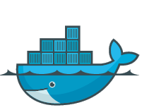
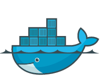

The Elephant Meets The Whale
Bringing PostgreSQL to Production on Docker
 

About this talk
Introduction to Docker basics
What makes a container Production-ready
This talk is not about container Orchestration, or managing a fully containerized environment
Containers and the Docker Ecosystem
What is a Docker Container?
Nothing new!
chroot -> BSD Jails -> LXC -> libcontainer
Docker is a specific implementation of a container
. . . but there are others
So, it's just a light-weight VM?
NO! Containers wrap a process, they are not Virtual Machines.
No hypervisor, no init, no cron, no process monitor, no utilities to manage multiple containers. . .
A Docker container has a single entrypoint, which launches a single process.

^^ Basically Docker
PostgreSQL on Docker
Getting Started
The official Docker image
https://hub.docker.com/_/postgres/- Each DockerFile command is a layer
- Each command runs at container build
- Smaller base images yield smaller containers
- But small containers aren't always that big a deal
Running the PostgreSQL Docker image
docker run -d --name pg -p 5432:5432 postgres:9.5psql -h $(docker-machine ip) -U postgres postgresWhat about ssh?
Short answer: don't use it
Containers host one process
Changes should be built into the container, not made ad hoc
But if you really must get into the container. . .
docker exec -it pg /bin/bashExtending the official image
Adding plpythonu
FROM postgres:9.5
RUN apt-get update \
&& apt-get install -y postgresql-plpython-9.5 \
&& rm -rf /var/lib/apt/lists/*
Building the new image
docker build -t pypg:9.5 .docker run -d --name pg -p 5432:5432 pypg:9.5psql -h $(docker-machine ip) -U postgres postgresThat is nice and all, but where is my data?
Volume management
Declaring volumes in the image with VOLUME

The docker volume command
docker volume lsdocker volume inspectCreating stand-alone volumes
Docker engine features volume plugins
- Flocker
- AzureFS
- GlusterFS
- Many more. . .
docker volume create -d local --label="pump_up"Logging
Where are the files?
Log to stdout, collect externally
And / or put logs on a volume
Build a pgBadger only container to handle the physical files
Docker engine features logging plugins
- json
- syslog
- splunk
- Logstash
- fluentd
- Many more. . .
Are we Production-ready yet?

Limitations of the official image
No data-checksums at initdb (and no control of initdb)
Can pass ENV variable $POSTGRES_INITDB_ARGS
The pgdata directory is all on one volume
Tablespaces? WAL? Postgres Log? WAL shipping?
Authentication methods?
Ways to handle postgresql.conf
Pass parameters to postmaster on startup
Use a volume
You can volume mount a single file (overwrites that file in image)
This works for your SSL certs, too
Implementation steps
Generate a simple postgresql.conf with include directives
Split major aspects of the conf into separate files (e.g. logging, WAL writes, locale, SSL)
Touch those file paths in the Dockerfile to create empty stubs
Mount each file on container startup
Well, now we're Production-ready, right?
Not hardly
More security
Running as root, using gosu in script
This means anyone can start the container and exec into root
Constraining the container, and OS level optimizations
Set swappiness 0 with --memory-swappiness
Set run-time constraints
- memory
- memory swap
- CPU shares
- Block IO weight
High availability & Connection Pooling
Initialize streaming replica by adding pg_basebackup to entrypoint
Put pgpool-ii in a container
Build pgbouncer into your Postgres container image
Or, volume mount the socket file, and leave pgbouncer in a seperate container that mounts the same volume
Add service discovery (etcd, Consul, Zookeeper)
Several organizations exploring better failover (Joyent Manatee, Red Hat Project Atomic)
Backups
Snapshot the volumes
Build a pg_dump / pg_basebackup container
Put pgbackrest in a container (and give it more cores)
Health & Monitoring
Monitoring moves up a level
docker stat- CAdvisor from Google
- Hosted solutions: Scout, DataDog
Can you run statsd, or another agent?
One process per container is arbitrary
But now you need something to watch the processes (and remember to EXPOSE the port in your Dockerfile)
Hooray! We're Production-ready
Now what have I done?

Challenges with Docker
Keeping track of lots of containers

What you imagine

What you actually have
Dealing with failures

Poorly Understood Security

Every system is hackable
Problems with Docker
Rapidly changing
Changes to machine version not backward compatible (must rebuild whole environment)
Community fragmentation?
Remember, Docker is an implementation, not a standard
Chasing Exciting Things

Thank you, #pgOpen2016!
Questions?
This presentation was built in reveal.js